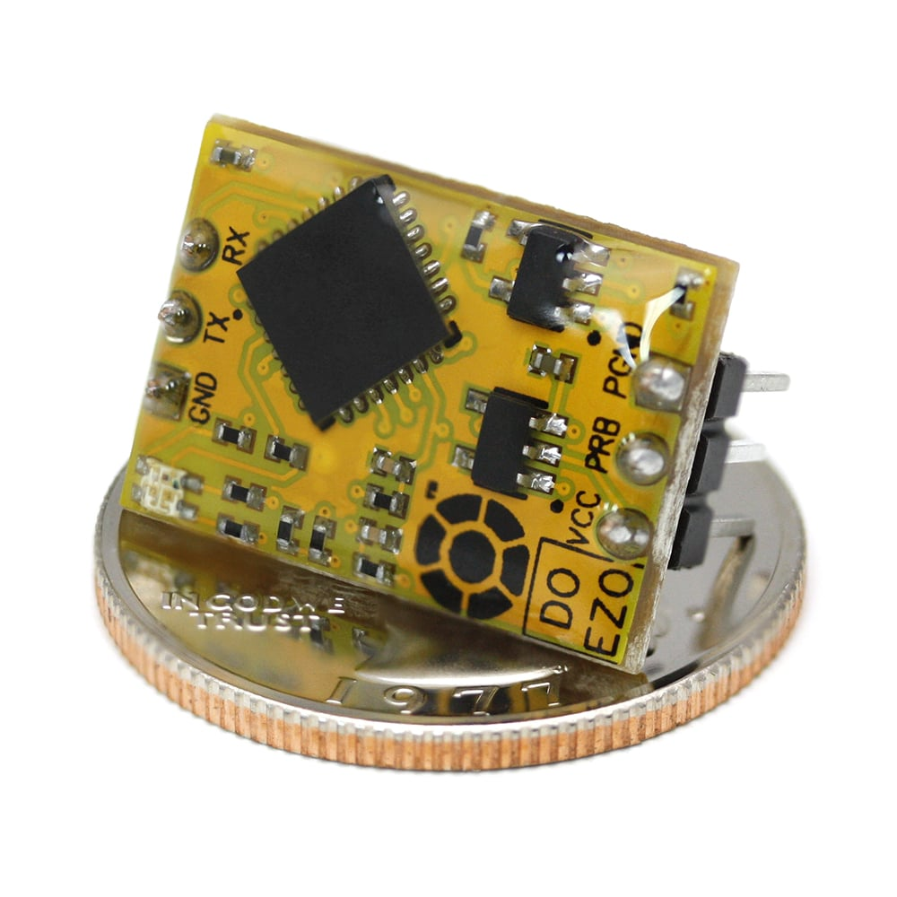
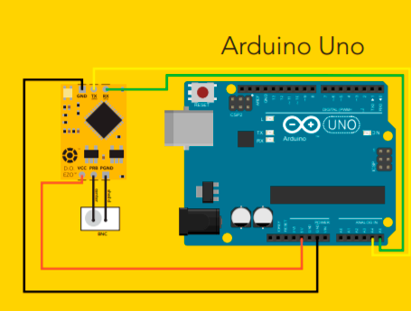
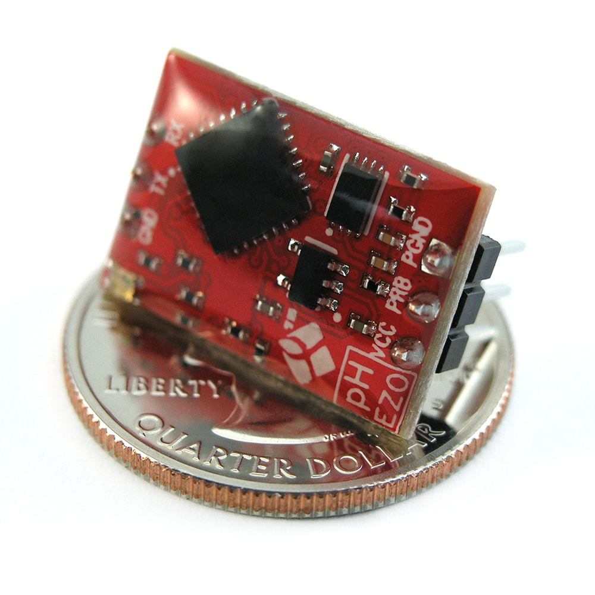
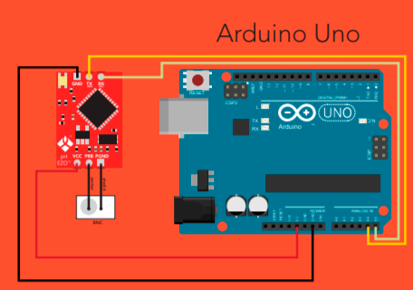
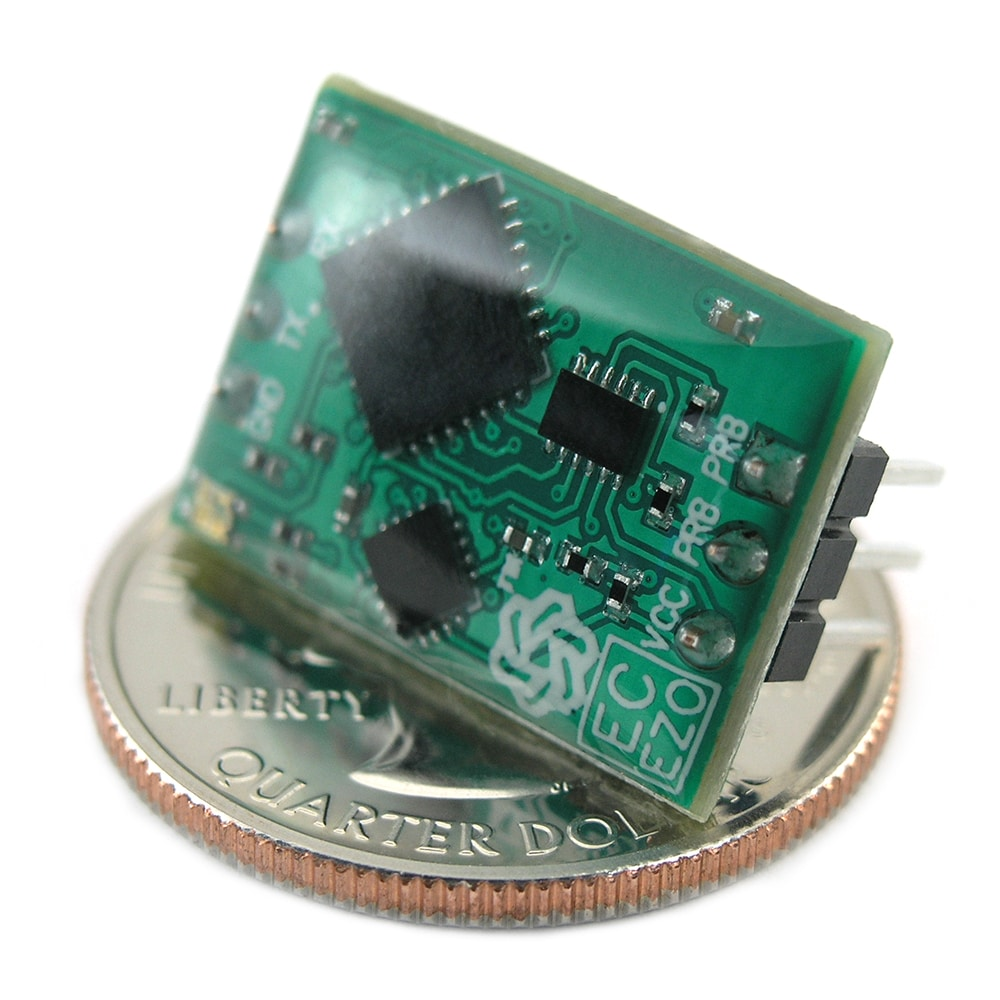
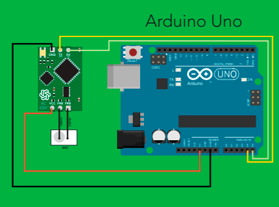

Микроконтроллер(Atmega328p) данного устройства связывается с программным обеспечением Aquaponics Zero на компьютере.
Все данные выводятся на экран. Вид программы:
Датчики
Датчик расстворённого кислорода

Точно рассчитать расстворённый кислород в воде довольно сложно. После выполнения всех математических расчетов требуются сотни тестов химического титрования, чтобы подтвердить правильность показаний по всей шкале. Процесс мучительный. К счастью, вам не нужно ничего этого делать.
Диапазон: 0,01 - 100+ мг / л или
0,1 - 400+% насыщения.
Точность: +/– 0,05 мг / л.
Время отклика: 1 чтение в секунду.
Протокол передачи данных: UART и I2C.
Адрес I2C по умолчанию: 97 (0x61).
Рабочее напряжение: 3,3 В - 5 В.
Формат данных: ASCII.
Размеры схемы: 13,97 x 20,16 мм (0,55 x 0,79 дюйма).
Масса: 1,77 г.
Подключение:

Библиотека с примерами
Датчик PH среды

Диапазон: 0,001–14 000.
Точность: +/– 0,002.
Время отклика: 1 чтение в секунду.
Протокол передачи данных: UART и I2C.
Адрес I2C по умолчанию: 99 (0x63).
Рабочее напряжение: 3,3 В - 5 В.
Формат данных: ASCII.
Размеры схемы: 13,97 x 20,16 мм (0,55 x 0,79 дюйма).
Масса: 1,76 г.
Подключение:

Библиотека с примерами
Датчик проводимости

От химического производства до гидропоники, проводимость является фундаментальным показателем химического состава воды.
Диапазон:0,07 - 500 000+ мкСм / см.
Точность:+ / - 2%.
Время отклика: 1 чтение в секунду.
Протокол передачи данных: UART и I2C.
Адрес I2C по умолчанию: 100 (0x64).
Рабочее напряжение: 3,3 В - 5 В.
Формат данных: ASCII.
Размеры схемы: 13,97 x 20,16 мм (0,55 x 0,79 дюйма).
Масса: 1,77 г.

Библиотека с примерами